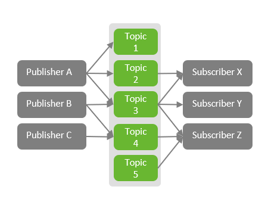

howto/release-note-eventstreaming
Release notes API Gateway
This document describes the overall positioning and use of the Event Streaming capability embedded into the Low-code, Enterprise iPaaS platform eMagiz. You will find a short description of this part of the product to understand the overall capability. This release will complement the User Guide also available in the User Guides section.
Release per July 3rd, 2020.
Positioning & Key Concepts
Event Streaming is one of the key Integration patterns that eMagiz supports in the platform. It's a distinct different approach towards integration focusing on very loosly connected data services. Publishers and Consumers of data are now aware of eachother and are using a single contract towards what data is exchanged.
Key considerations when to use the Event Streaming integration pattern
Below is the list of considerations when to use Event Streaming inside eMagiz.
One of the first angles to consider Event Streaming is when an integration in asynchronous in nature, comes in continously, and contains events/facts/updates from other business processes.In micro-services architectures, services may publish events to other services in terms of data updates. Subscribed Services may consume these data in their own scheduled manner for as long as that data element is retained in the topic (that holds the data published by the producer).

The other important angle when to consider Event Streaming is when IoT devices are producing large event based data such as environments conditions, logging, GPS data or alike. These events can be used in combination with data from other business process to become valuable. Other considerations or key notes when to use an Event Streaming are:
- Data is event based - facts are produced towards a topic
- Data can be processed in an asynchronous nature
- Data is produced by a Producer - Consumers need to pull the data from the topic for further processing
- A topic can have multiple Producers and multiple Consumers
- Data is persisted in a Event Streaming database using a log-structured approach
- Retention settings of data can be set per topic but is also determined by database sizing limits - FIFO method used for data cleanup
Features
The event Streaming is fully embedded into the eMagiz Low-code Enterprise iPaaS so that users have a similar user experience when configuring the API Gateway, a Messaging integration or an Event Stream. All the platform features in the different ILM phases are able to take into account the Event Streaming configuration in upcoming releases. At this moment, Event Streaming is functional in the eMagiz platform but not fully integrated into the ILM phases. Below are the key capabilities of the platform:
- Event Stream configuration - Deploy Phase contains the Event Streaming configuration options
- Topics can be created and configured
- Users and ACL can be created and configured
- Schema's can be defined including compatibility options
- Basic Monitoring to see the consumer lag (how many message are not yet fetched by a consumer)s